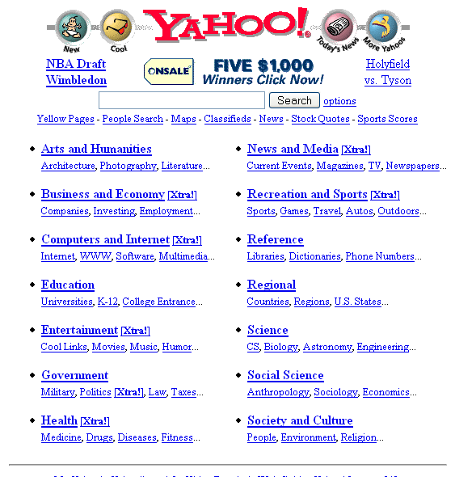
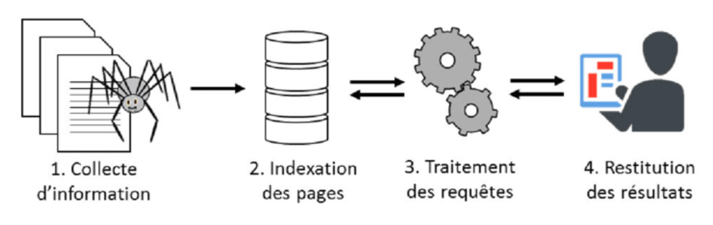
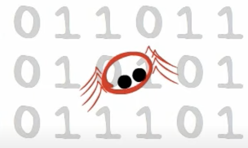
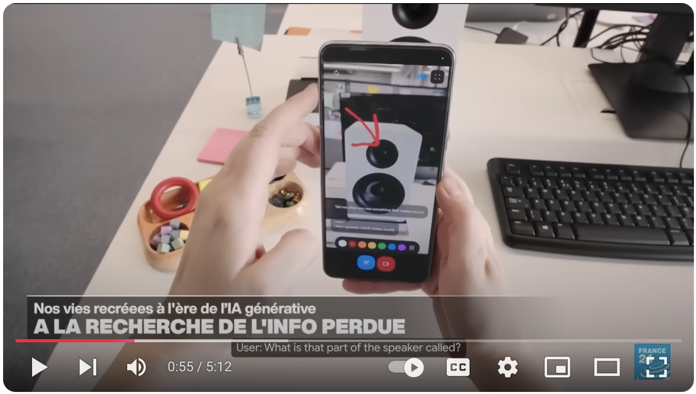
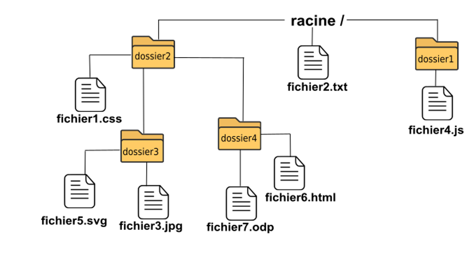

le web
- Cours le web et les moteurs de recherche: Lien
- Cours modèle client-serveur, URL: Lien
- Cours langage HTML: Lien
- Compléments sur CSS: Lien
- Travaux pratiques dans la partie Compétences numeriques > publier du site
le Web et les moteurs de recherche
Le world wide web, ou toile en français, est un service construit sur l’infrastructure du reseau internet pour mettre à la disposition des utilisateurs des documents repartis au niveau mondial.
Lors de sa navigation, l’usager d’internet va suivre des liens qui connectent les pages entre-elles (ce que l’on appelle surfer sur le Web).
Historique du 3w
Le “World Wide Web”, plus communément appelé “Web” a été développé au CERN (Conseil Européen pour la Recherche Nucléaire) par le Britannique Sir Timothy John Berners-Lee et le Belge Robert Cailliau au début des années 90. À cette époque les principaux centres de recherche mondiaux étaient déjà connectés les uns aux autres, mais pour faciliter les échanges d’information Tim Berners-Lee met au point le système hypertexte. Le système hypertexte permet, à partir d’un document, de consulter d’autres documents en cliquant sur des mots clés. Ces mots “cliquables” sont appelés hyperliens et sont souvent soulignés et en bleu. Ces hyperliens sont plutôt connus aujourd’hui sous le simple terme de “liens”.
Cette première page est d’ailleurs encore en consultation sur le lien suivant : http://info.cern.ch/hypertext/WWW/TheProject.html
Normalisation de la présentation de l’information (w3c)
Le bon fonctionnement du www nécessite le respect de normes et de formats de fichiers et de protocoles entre serveurs et clients.
Le World Wide Web Consortium, abrégé par le sigle W3C, est un organisme de standardisation à but non lucratif, fondé en octobre 1994 chargé de promouvoir la compatibilité des technologies du World Wide Web telles que HTML, CSS, JS, …
W3C: un organisme qui définit les standarts du web
Le web fonctionne avec : le protocole HTTP (HyperText Transfert Protocol), les URL (Uniform Resource Locator) et le langage de description HTML (HyperText Markup Language).
La lecture et l’usage des hyperliens d’une page html nécessite d’utiliser un navigateur.
Adresse d’une page web: URL
Uniform Ressource Locator: où est la page?
Une URL (Uniform Resource Locator) est l’adresse d’une page web. Voir la page le web: modele client-serveur
Naviguer entre les pages: hyperliens
On peut entrer dans une page directement en saisissant son URL.
On peut alors se demander: Comment est tissée la toile du web? C’est à dire, comment sont reliées ces pages les unes aux autres…
Tout d’abord, il y a les liens hypertext. Ces liens permettent la navigation de page en page, et c’est comme cela que l’on peut utiliser le Web.
Ensuite, il y a l’entrée par un moteur de recherche.
Trouver une page: moteurs de recherche
Principe
Avant l’usage généralisé des moteurs de recherche, les sites étaient référencés par dans des annuaires web: répertoire web, annuaire Internet ou répertoire Internet est un site web proposant une liste classée de sites Web.
Le classement se fait typiquement dans une arborescence de catégories, censée couvrir tout ou partie des centres d’intérêt des visiteurs.
Aujourd’hui, ils ont perdu de l’interêt face à la facilité d’utilisation des moteurs de recherche, et ne sont plus utilisés que dans des cas particuliers voir article

dernière page de l'annuaire Yahoo avant sa fermeture en 2014
Un moteur de recherche: Logiciel qui dispose d’une indexation des pages internet. Son fonctionnement repose sur plusieurs étapes, qui sont executées en continu:
- La collecte automatique d’informations, par des robots d’exploration (Crawlers), qui parcourent le reseau hypertexte du web.
- Le référencement: un traitement qui consiste à analyser des pages pour y detecter des mots clés utilisés fréquemment par les internautes. L’indexation, est la manière dont le moteur de recherche organise ces informations. Il va créer une table de mise en correspondance mot-clé <=> URL de la page.
L’internaute va utiliser l’interface du moteur de recherche pour faire une recherche par mots-clés:
- Traitement de la requête: Les mots clés sont comparés avec ceux référencés et le moteur de recherche construit une liste ordonnée, un classement établi grâce à un calcul selon un algorithme. C’est un classement par degré de pertinence.
- Le moteur de recherche va retourner une liste ordonnée de liens en rapport avec les mots clés proposés par l’internaute.
L’utilisateur va alors cliquer sur le lien de son choix parmi les propositions du moteur de recherche. Et se retrouver sur la page proposée, sans avoir à connaitre et mémoriser son URL.

fonctionnement d'un moteur de recherche
Mooc SNT: internet et le web: 3'00 et plus (moteurs de recherche)

video: Mooc SNT internet et le Web + moteur recherche
Les moteurs de recherche – Mediaprovence (juin 2019) https://www.youtube.com/watch?v=Y8l4hKNQOEY

video: Fonctionnement du moteur de recherche – FenetresurWordpress
Activité 1 - simuler un moteur de recherche
Créer un index à partir de mots clés, relevés dans les différents textes de Raymond Queneau: Exercices de style.
- Lecture des textes: Raymond Queneau - Exercices de style
- Analyse des résultats: Lien vers pdf
Activité inspirée du document sur : imo.universite-paris-saclay.fr
Activité 2 - recherche documentaire
a) Comment fait un moteur de recherche pour trouver des milliards de pages du Web ?
b) Comment fait le moteur de recherche pour faire un classement entre ces pages ? Qu’est-ce que le SEO (Search engine optimisation)
c) Quand vous avez cinq à six mille ordinateurs qui travaillent pour vous, il est certain que plusieurs tomberont en panne chaque jour. Comment un moteur de recherche fait-il pour ne jamais s’arrêter ?
d) Pour fabriquer un index, il faut lire toutes les pages qu’il index sur le Web. Le moteur de recherche n’a pas fini de les lire que certaines pages ont déjà changé et qu’il lui faudrait les relire. Et découvrir de nouvelles pages… Comment se tenir au courant des « nouveautés » du Web ?
e) On fait des fautes d’orthographe. Comment un moteur de recherche peut-il répondre aux questions quand les textes et les questions contiennent des fautes ?
f) Moteur de recherche et IA générative : Les moteurs de recherche évoluent et proposent maintenant de nouvelles expériences. Quelle est la différence entre un moteur de recherche, comme Google, et une application de génération de texte à base d’IA comme Chat GPT ?
Questions inspirées du document sur : imo.universite-paris-saclay.fr
Moteur de recherche et IA générative

Les surprises à venir des moteurs de recherche - FRANCE 24
Les firmes OpenAI, Google ou encore Perplexity vont modifier notre manière de rechercher sur Internet.
ChatGPT, conçu par le groupe OpenAI, est un Logiciel de Traitement automatique du langage naturel. Il repose sur un modèle d’apprentissage automatique et une architecture de réseau neuronal.
OpenAI a dû former le modèle à travers une quantité importante de données pour que le système puisse interagir de manière naturelle avec un interlocuteur humain. (lecture de livres, de blogs, etc…). Depuis, il procède à une optimisation de l’apprentissage via une couche supplémentaire de formation utilisant la RLHF ou Reinforcement Learning from Human Feedback.
ChatGPT va servir à générer des textes de niveau humain, des traductions, mais aussi d’autres contenus : images, videos, constructions à partir modèles physiques (sequences et repliement des proteines !). Il peut servir à analyser et reconnaître des formes (medecine, reconnaissance faciale…)
L’interface du logiciel est très différente de celle d’un moteur de recherche: Avec ChatGPT Search, on a l’impression de participer à une véritable conversation, en ajoutant des informations à sa requête initiale. ChatGPT comprend et se souvient du contexte. Une fois la requête lancée, il rassemble les informations provenant de différentes sources pour fournir des réponses approfondies, et générer un texte ou un média.
Ces logiciels génératifs de texte ou image peuvent aussi répondre à une recherche sur le net, mais ils se distinguent des moteurs de recherche:
Chatbot versus moteur de recherche: ChatGPT Search vs Google Search
Le type de reponse de ChatGPT va être davantage construite, comme une synthèse. Par exemple, ChatGPT Search peut comparer des produits côte à côte, en soulignant les avantages et les inconvénients ou même en établissant un tableau comparatif simple pour vous aider à choisir.
En revanche, Google Search traite chaque question séparément, de sorte qu’il ne relie pas les réponses de la même manière et n’est pas prévu pour maintenir une conversation. On l’utilise plus pour obtenir des informations rapides, des informations visuelles ou des options de réservation et d’achat.
Inconvénients des Chatbot et moteurs génératifs basés sur IA:
- Gourmand en ressources énergétiques, puissance de calcul et mémoire significatifs
- Temps de calcul long, rendant difficile le traitement en temps réel
- Absence de mise à jour en temps réel (n’a pas accès à Internet en temps réel)
- peut produire des réponses biaisées ou limitées.
- Pose des questions éthiques et juridiques, notamment en ce qui concerne l’utilisation de données protégées par le droit d’auteur et la confidentialité des informations.
sécurité et confidentialité
Moteurs de recherche et problème de confidentialité
Un moteur de recherche, c’est une entreprise, qui doit faire des profits. Ses revenus viennent des annonceurs (sites commerçants) qui sont mis en avant par des publicités ciblées. C’est un mode de référencement payant, par opposition à celui naturel, réalisé à partir des contenus redactionnels (SEO).
Les moteurs de recherche mettent en avant une expérience plus personnalisée de l’internaute. Et ils ont besoin pour cela de récupérer vos données.
video: Les moteurs de recherche – Mediaprovence (juin 2019)
Limiter ses traces numériques: solutions
Ce que le moteur de recherche appelle des données échangées (entre services de la même entreprise), sont vos données personnelles. Votre identité, vos contacts, la durée des appels, date, titres de vidéos, musiques consultées, historique des coord GPS, adresse IP, données des capteurs de l’appareil, requete lors des recherches, historique de navigation…
Pour limiter ses traces sur le Web, et reduire cette collecte de données qui vous concernent, vous pouvez:
- dans le navigateur Mozilla : effacer les traces : bouton bibliothèqe, Historique, marques pages et plus encore > Historique > Effacer l’historique recent (cocher au choix : historique, historique des formulaires et des recherches, cookies et câche) ET Données > préférence des sites
- paramétrer le navigateur : menu > Options > Vie privée et sécurité (Il y a plusieurs niveaux de sécurité). Dans Identifiants et mots de passe > afficher les mots de passe. Dans cookies et données > recherche la présence d’un cookie de connexion au site du lycée…
- et Vie privée : blocage de contenus : toujours, afin de bloquer les contenus tiers qui peuvent ralentir la navigation ou distraire.
Impacts sur les pratiques humaines
-
Aspects positifs: liberté d’information, d’opinion
- Le web permet à chacun de publier des informations sans contrôle préalable par une autorité. Cette revolution democratique amène la présence de fausses nouvelles (fake news) et le besoin de verification. Libération (désintox) et Le Monde (le blog des decodeurs) possèdent des espaces dédiés à la pratique, dédiant des journalistes à cette seule tâche.
- Wikipedia est un exemple d’encyclopedie libre et participative, où des centaines d’internautes publient et relisent et effectuent des milliers de changement par heure.
-
aspects négatifs:
- Le web et le droit d’auteur: besoin de protection grâce à des licences (creatice commun)
- Les traces laissées de manière voulue ou non lors de sa navigation
- la surveillance des individus sur le web
D’où l’importance d’un cadre juridique permettant de protéger les usagers, préoccupation à laquelle répond le règlement général sur la protection des données (RGPD).
- Cout environnemental
- Selon Google, toute requête sur son moteur de recherche consomme autant d’énergie qu’une ampoule de 60 watts qu’on allume pendant 17 secondes. Soit, en moyenne, une émission de 0,7 gramme de CO2.
- 1 mail simple émet 4 g CO2. 1 mail avec pièce jointe émet 35 gCO2, soit près de 10 fois plus !
- Pour une requête sur ChatGpt : Une courte conversation (quelques interactions) avec le dernier modèle de ChatGPT émet environ 270g d’équivalent CO2 (eqCO2), soit près d’une tonne de CO2 par an pour dix échanges par jour.
Exercices
Construire une URL (Uniform Ressource Locator)
Pour accéder aux documents d’un serveur, il faut saisir une URL (une adresse) dans un navigateur.
Un ordinateur serveur héberge des dossiers et des fichiers. Le chemin vers un document est mis après l’adresse du nom de domaine dans l’URL.
Par exemple, pour atteindre fichier1.css, il faut saisir l’adresse :
http://nom_du_domaine.fr/dossier2/fichier1.css

exercice inspiré de la page web du site pixees.fr/informatiquelycee
- Quelle est l’URL à saisir pour atteindre fichier4.js ?
- Quelle est l’URL à saisir pour atteindre fichier6.html ?
Autres exercices
fiche d’exercices: lien vers le pdf
Liens
- article binaire blog le Monde : Le www a 30 ans
- TP moteurs de recherche: la-martiniere-diderot.ac-lyon